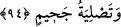

Onlar, amel defterleri solundan verilenlerdir. Onların durumu daha önce geçen
“Sonra siz ey sapıklar, yalancılar!” (Vâkıa 56/51) âyet-i kerîmesiyle ifâde edilmişti.
Böylece onlar yerilmiş ve mâruz kaldıkları azabın sebebi belirtilmiş olmaktadır. Bu
sebep, öldükten sonra dirilmeyi ve benzeri şeyleri yalanlamaları ve hidayetten ve
haktan sapmış olmalarıdır.
93. İşte ona da kaynar sudan bir ziyafet vardır!
Daha önce de açıklanmış olduğu gibi zakkum yedikten sonra bu suyu içecektir. Onun
kabirdeki ödülü de, cehennem ateşinin buharıyla cehennemde kızdırılmış sıcak sudur.
94. Ve (onun sonu) cehenneme atılmaktır.
Bazı müfessirlere göre âyet-i kerîmenin mânâsı, onlar için cehennemde ikamet
etmeleri sebebiyle çeşitli azaplar ve sıkıntılar olacaktır. Bunun, o yalanlayıcının
kabirde hazır bulacağı cehennem ateşinin yakıcılığı ve dumanı olduğu da söylenmiştir.
Burada “tasliye” mastarı, mef’ûlü olan cahim kelimesine izâfetle isim tamlaması
olmuştur.
95. Şüphesiz ki bu, kesin gerçektir.
“Şübhesiz ki bu,” bu sûre-i celilede zikredilenler “kesin gerçektir.” Yâni, kesin olan
haberin gerçek bir bilgisidir. Bu hakku’l-yakîn ifâdesi, mevsûfun sıfatına izâfe edilmesi
kabilindendir. Bazı âlimlere göre bu âyetin mânâsı, “kesin olan hak” demektir. Yâni,
üzerinde herhangi bir değişikliğin meydana gelmeyeceği “kesinlikle sabit olmuş
gerçek”tir.
Ebu’l-leys der ki: Bu âyet-i kerîmede anlatılanlar, kesinlikle vukû bulacak şeylerdir.
Yakîn, insanın kesin olduğu ve gönülden kesinliğini kabul ettiği bilgidir. Buna
kalıplaşmış gerçek, berdü’l-yakîn de denir. Bu, insanın mutmain olduğu, gönül huzuru
ile kabullendiği, her türlü kuşkuların ve tereddütlerin giderildiği ilimdir. Burada
kasdedilen, bilinenin kesinleşmişidir. Çünkü, mübteda bilinenden ibaret olup, haberin
de böyle olması gerekir. Mananın takdiri şöyledir: Bu, kesinlik kazanmış haberin